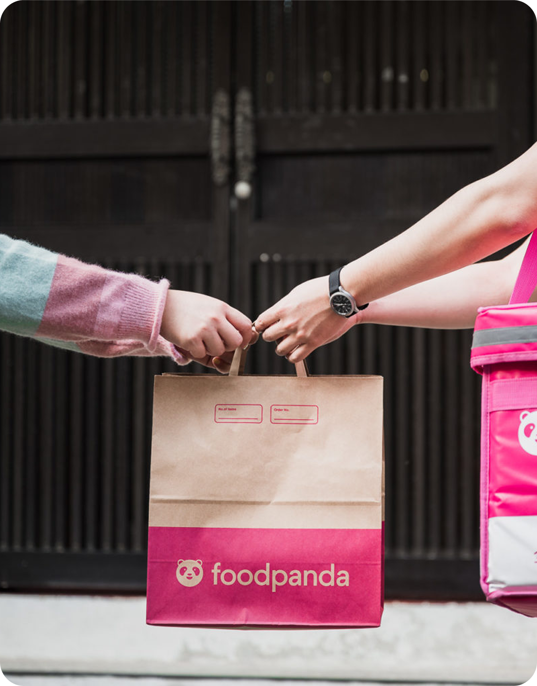
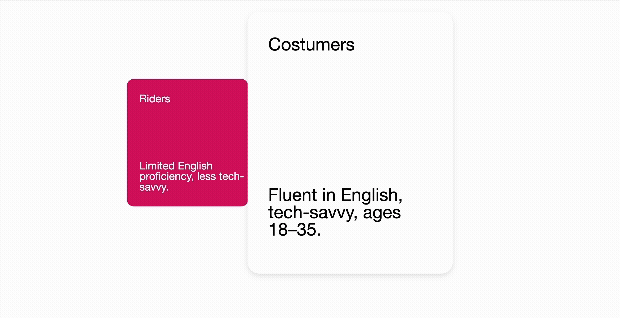
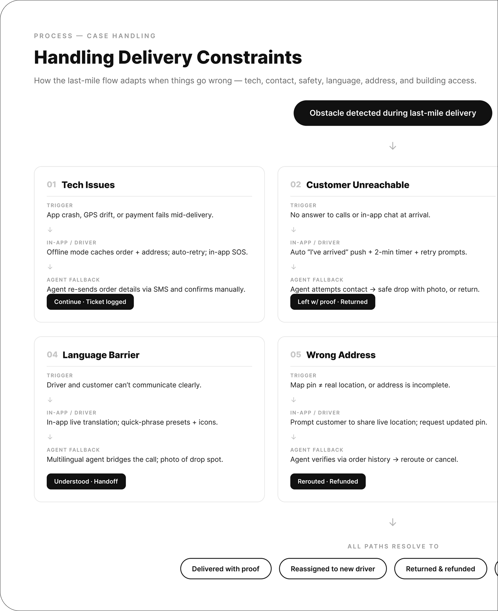
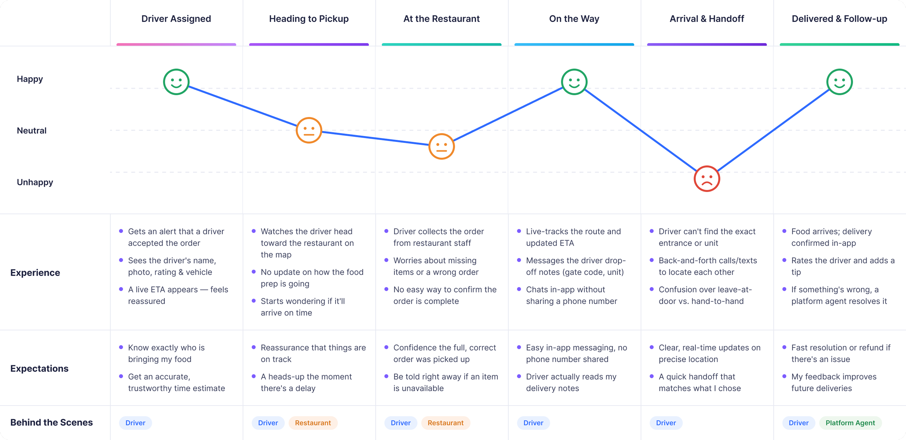
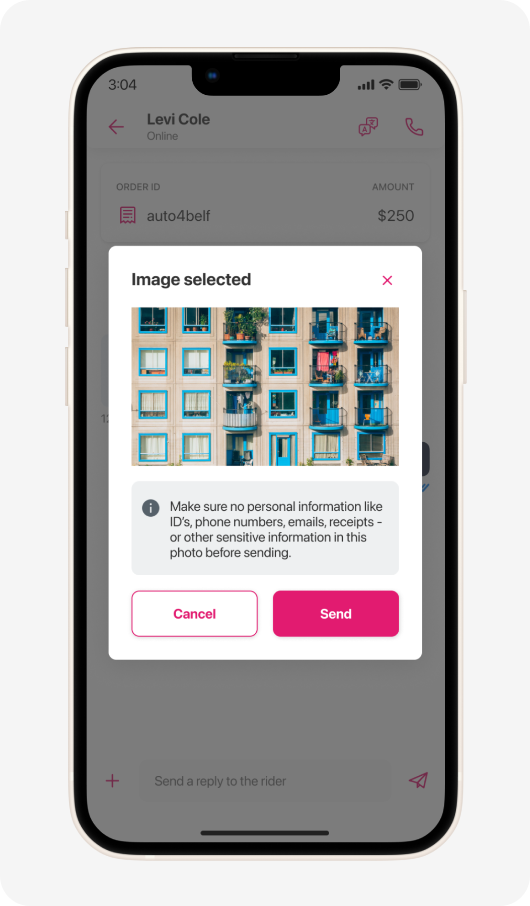
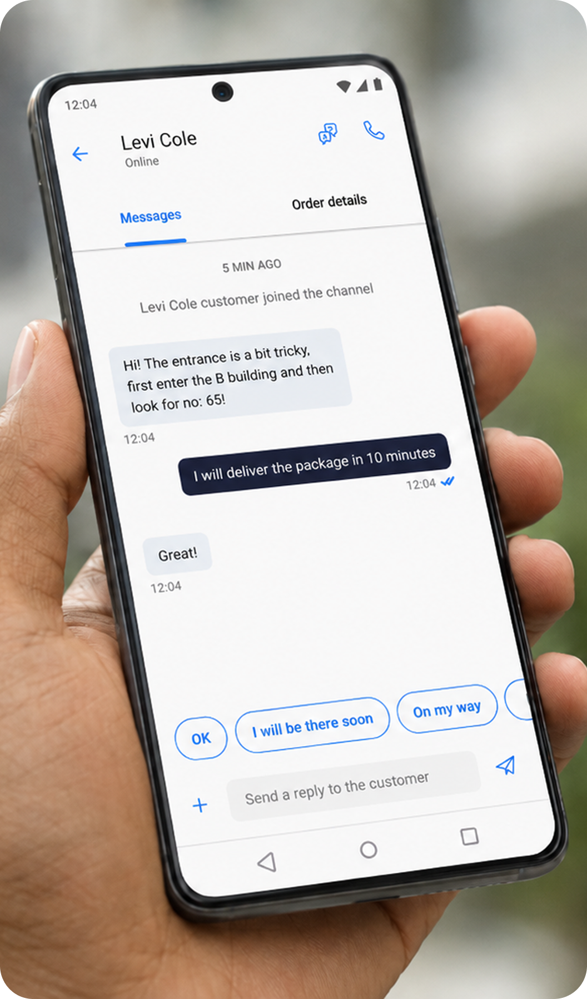
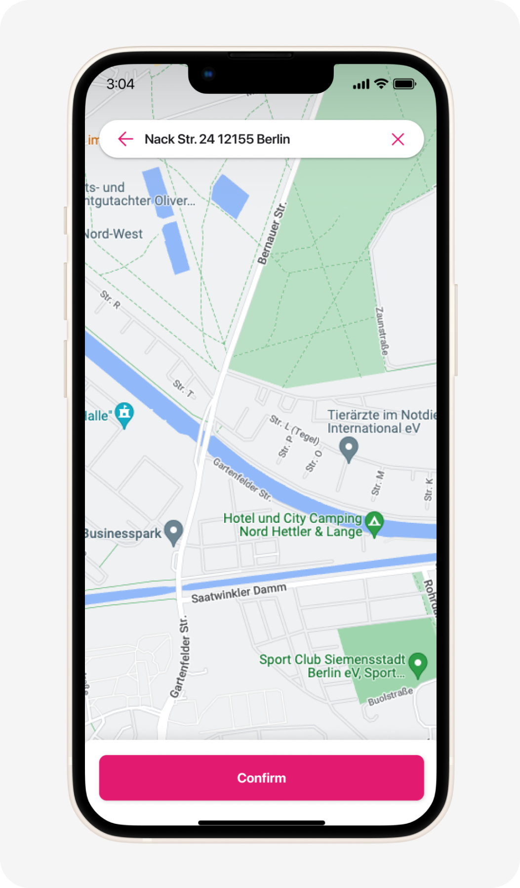
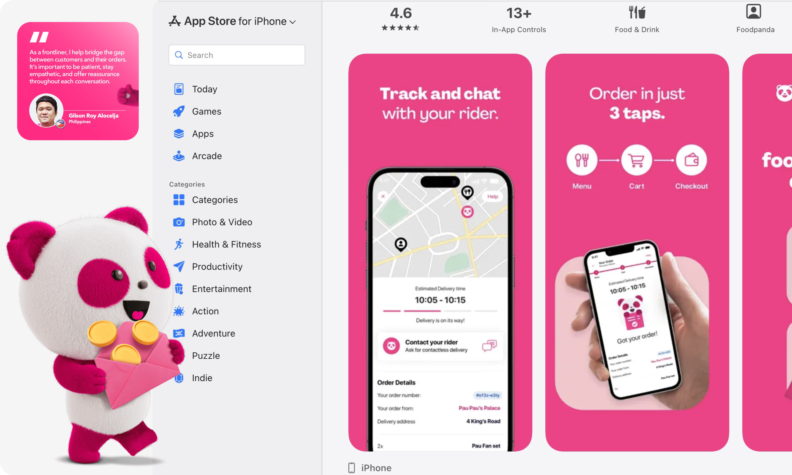

Role
Product Designer
Team
1 Lead Product Designer 1 Product Designer 1 UX/UI Designer
My contribution
Experience design Interaction design
Timeline
5 weeks
Think Uber Eats, but built for Asia. Backed by Delivery Hero, the Berlin-based global delivery giant, this platform has scaled to 11 countries, 400+ cities, and 33 million monthly active users — delivering far more than just food, with groceries and everyday essentials on demand too.
Goal
Reimagine how drivers and customers connect — rebuilding the contact experience integration into the Foodpanda app to make every interaction faster, clearer, and frictionless.
My role
I collaborated with Foodpanda's lead product designer and UX team to craft scalable solutions for a consistent rider and customer experience across multiple countries.
Audience
Defining our audience was tricky — we were designing for a huge range of users across many different countries. Rather than treating "users" as one group, we focused on the constraints people face based on who they are, digging into data on both sides of the experience: customers and riders. We looked at language preferences, buying habits, and levels of tech-savviness to shape two distinct profiles.
Customers: fluent in English, tech-savvy, ages 18–35.
Riders: limited English proficiency, less tech-savvy.

Research
I kicked things off by talking with the team and digging into existing driver interviews and data. A few key insights emerged. Language was a major barrier — with Foodpanda operating across 8 countries at the time, many drivers didn't speak English, making communication a real challenge technology needed to solve for. On top of that, technical friction like the service dropping out created accessibility issues for these users. Together, these pain points added an extra 6–8+ minutes to delivery times.


Visual explorations
Once the wireframes were ready and approved by the team, I moved on to defining the visual design aligned with Foodpanda's brand voice. One direction I explored was gamification, a pattern common across many Asian markets. While it had potential to boost engagement for customers, it quickly fell apart for riders: adding an extra step to the contact flow wasn't realistic for someone glancing at another phone or juggling deliveries mid-drive. Since our priority was a consistent experience across both sides, gamification simply wasn't scalable. Instead, we doubled down on simplicity — clean layouts and large, obvious CTAs that anyone could navigate at a glance.

Final design
After multiple iterations, we landed on a direction that felt true to Foodpanda's existing branding — a balanced mix of vibrant layout that kept the lively, energetic look Foodpanda is known for, while still prioritizing accessibility and scalability.





Learnings
This project surfaced a lot of valuable learnings. The insights pushed me to refine Foodpanda's brand voice toward a cleaner, simpler, and more intuitive flow. My focus shifted toward being proactive and effective with delivery times against competitors, while creating a clearer, better experience across all users.